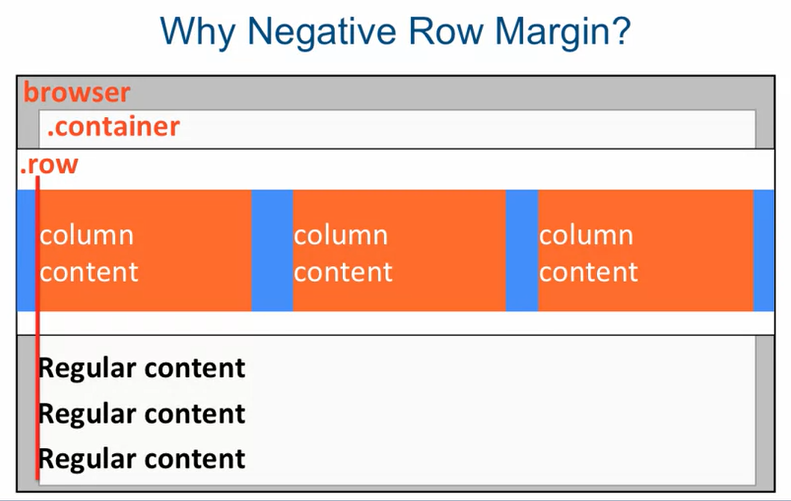

Notes
- Boostrap is the msot popular HTML, CSS and JS framework for developing responsive, mobile first projects on the web (consists of mostly CSS)
- Mobile first (pure): Develop the site (layout) for mobile devices first - forces you to consider what's really important and what you really want to include (mobile limited space)
- Mobile first (unpure): Plan the site (layout) for mobile devices first, but develop the site (layout) for desktop devices first
- Disadvantage of Bootstrap (vs writing your own):
- Too big, too bloated (a lot of features you'll probably never use, but you can download selectively) (you can write your own framework that's more targeted, but it'll take you a lot longer)
Download
Using Bootstrap
- Link bootstrap in heading section (link your own stylesheet after it as you might want to overwrite some code)
- Declare jQuery using
<script src="js/jquery-version.min.js">
<script src="js/bootstrap.min.js">
<script src="js/script.js"> (this is your own js file)
The Bootstrap Grid System
- Bootstrap grid must be inside container or container-fluid (E.g. div with class container/container-fluid)
- container-fluid: stretches your layout to the full width of the browser + provides consistent padding around grid and other content
- container: has predetermined fixed width, but still resposnive based on the width of browser (break points)
- The row class creates horizontal groups of columns
- Columns collapse and interact with each other as a group but independently from columns in another row
- applies negative left/right margins to counteract padding given by contianer/container-fluid class
- Each column has its own padding as we want to sepearte columns from each other
- Bootstrap column class: col-SIZE-SPAN
- SIZE = screen width range identifier (e.g. LG 1200px+, MD etc.)
- Columns will collapse (stack on top of/below each other) below that width - If you had several columns before, you'll only have 1
- Unless another rule applies (E.g. Specified both large and medium)
- If you want to have a guarenteed column layout at all times, you can just specify .col-xs-SPAN
- SPAN = How many columns element should span (in 12 column grid system), value can be 1-12
- element that pushes sum of columns above 12 will automatically wrap to the next line
